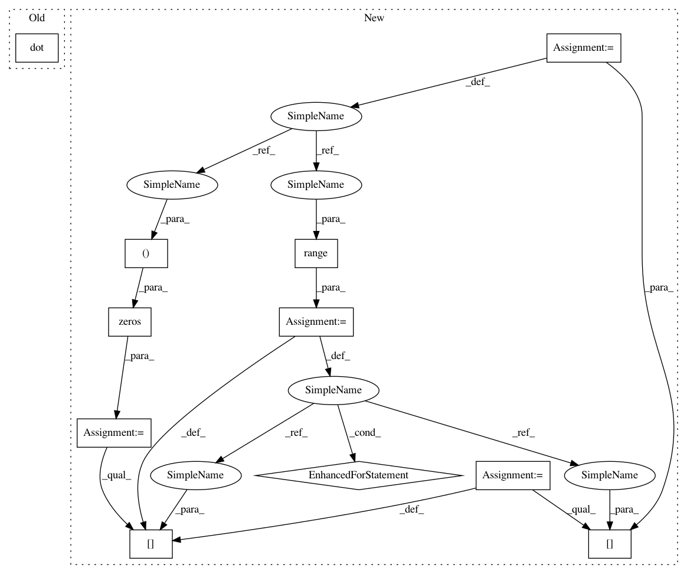

506b234094009d55d326f1ce957f53f15d4b65ee,geomstats/spd_matrices_space.py,SPDMetric,exp,#SPDMetric#Any#Any#,160
Before Change
sqrt_base_point = scipy.linalg.sqrtm(base_point)
inv_sqrt_base_point = np.linalg.inv(sqrt_base_point)
tangent_vec_at_id = np.dot(np.dot(inv_sqrt_base_point,
tangent_vec),
inv_sqrt_base_point)
exp_from_id = group_exp(tangent_vec_at_id)
exp = np.dot(sqrt_base_point,
np.dot(exp_from_id,
After Change
or n_tangent_vecs == 1
or n_base_points == 1)
sqrt_base_point = np.zeros((n_base_points, mat_dim, mat_dim))
for i in range(n_base_points):
sqrt_base_point[i] = scipy.linalg.sqrtm(base_point[i])
inv_sqrt_base_point = np.linalg.inv(sqrt_base_point)
tangent_vec_at_id = np.matmul(inv_sqrt_base_point,
tangent_vec)
In pattern: SUPERPATTERN
Frequency: 3
Non-data size: 11
Instances
Project Name: geomstats/geomstats
Commit Name: 506b234094009d55d326f1ce957f53f15d4b65ee
Time: 2018-02-26
Author: ninamio78@gmail.com
File Name: geomstats/spd_matrices_space.py
Class Name: SPDMetric
Method Name: exp
Project Name: geomstats/geomstats
Commit Name: 506b234094009d55d326f1ce957f53f15d4b65ee
Time: 2018-02-26
Author: ninamio78@gmail.com
File Name: geomstats/spd_matrices_space.py
Class Name: SPDMetric
Method Name: exp
Project Name: geomstats/geomstats
Commit Name: 506b234094009d55d326f1ce957f53f15d4b65ee
Time: 2018-02-26
Author: ninamio78@gmail.com
File Name: geomstats/spd_matrices_space.py
Class Name: SPDMetric
Method Name: log
Project Name: geomstats/geomstats
Commit Name: 2e296adb05f62e4821c36b6f42b1470bdb10eaa6
Time: 2018-02-05
Author: ninamio78@gmail.com
File Name: geomstats/special_euclidean_group.py
Class Name: SpecialEuclideanGroup
Method Name: inverse